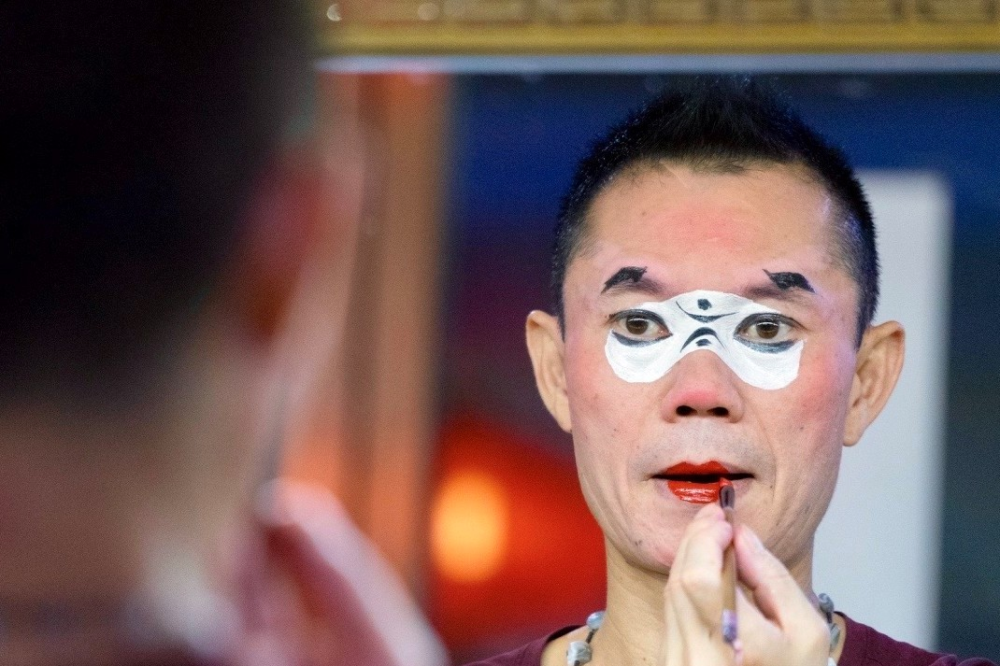

→
←
川剧起源
川剧起源于何时，语焉不详，多有歧异，但形成于清代却有共识。明末清初，由于各地移民入川，以及各地会馆的先后建立，致使多种南北声腔剧种也相继流播四川各地，并且在长期的发展衍变中，与四川方言土语、民风民俗、民间音乐、舞蹈、说唱曲艺、民歌小调的融合，逐渐形成具有四川特色的声腔艺术，从而促进了四川地方戏曲剧种——川剧的发展。
川剧动态

川剧“文生”肖德美 从放牛娃到梅花奖得主
“川剧里小生分武生、文生，但文生又分了很多类型，包括风流潇洒、温文尔雅、瓜嗲魅秀、气派官绅、贩夫走卒等，完全形成了自己的体系和程式功法以及代表剧目。”11月3日举行的“肖德美川剧文生表演艺术专场”......《天衣无缝》 现代川剧的舞台四美
新编谍战川剧《天衣无缝》改编自著名编剧张勇的“谍战三部曲”小说（《一触即发》《伪装者》《贵婉日记》）之第三部《贵婉日记》。对于熟悉红色谍战题材影视剧的观众来说，本剧无疑是一部自带IP的作品，得益于小说三部曲以及......川剧小知识
最著名的绝活——变脸流传最广的剧目——《白蛇传·金山寺》
变脸速度能多快——5秒12变
川剧最具创造性的声腔——高腔
变回演员的真脸后再变出脸谱——回脸
川剧试听
《红梅记》
《做文章》
《八件衣》
《卖画拍门》
《花子骂相》